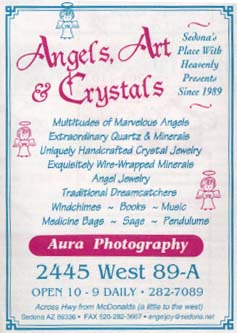

セドナ日記 〜 第４日目 98.5.7
エンジェルとクリスタルのお店
 昨日、夕食前に偶然見つけた、エンゼルとクリスタルのショップに再び向かう。
昼間でもやっぱり店は空いていたが、先客のカップルがいて、彼らは、「オーラ写真」というのを撮って、お店の人に解説してもらっていた。サンプルを見ると、身体の周りから確かに、霧のような、もやもやした色がついている。そして、その色は、体調や感情で変化するらしい。ふだん、目には見えないが、僕らの周りには、そのようなエネルギーの場が存在しているらしい。ちょっと、これまでの常識では信じ難い事なのだが、「セドナなんだし、まあそういうこともあるか....」と妙に納得してしまう。疑うより、楽しんだほうがいいじゃない。でも、僕は、そのオーラ写真撮りはしなかった。それよりも、「石」に興味があったのである。
ずらっと、並んだ。石、クリスタル。相性のいい物を見つけるべく、１つずつ、見ていく。見るというよりは、感じていくというほうが正確かもしれない。（オーラ写真のことを、とやかく言ってたわりには、充分、妙な世界にはまっていた。）気のせいか、本当に感じているのか、よくわからないのだけど、手をかざすと、それぞれの石やクリスタルによって、伝わってくる「刺激のようなもの」が異なるのである。あるのもは、とがっているし、あるものは、やわらかい。強いもの、弱いもの、不思議だが、感じるのである。
１時間くらいかけて、「ローズピンクのクリスタル」を見つけた。原石で、カットされていないのもだ。手のひらに、ちょうどのるサイズ。「柔らかいが、強い何か」が気に入った。セドナの思い出を、このクリスタルに染み込ませて持って帰ることにした。気持ちが高まったついでに、天使の風鈴も追加購入。このお店の中には、本物の天使がきっと飛びかっているのだと思う。もしかしたら、大昔、僕らは、彼等の姿が見えて、話しもすることができたのかもしれない。もう一度、その姿を、見ることができるのだろうか？ もし、話せたとしたら、彼等は何を教えてくれるのだろうか？ そのエンゼルとクリスタルのショップは、不思議な気持ちにさせてくれる、素敵な空間だった。
*エンゼルとクリスタルのショップ情報＠セドナアップデイツ（2003.11.30）